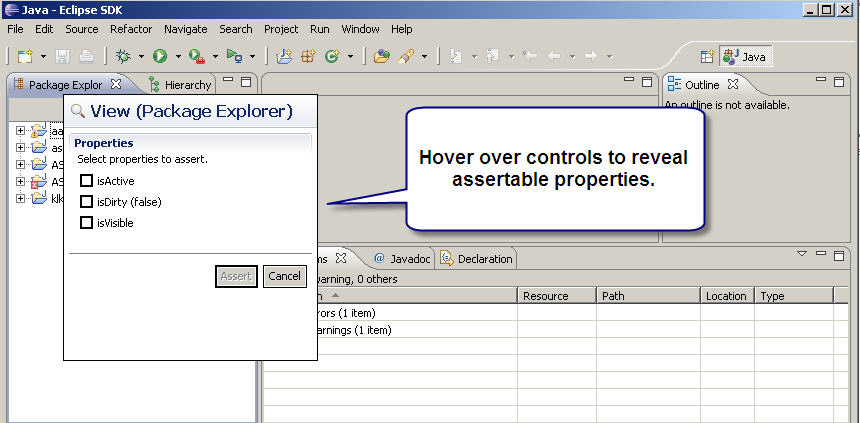
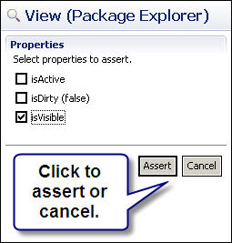
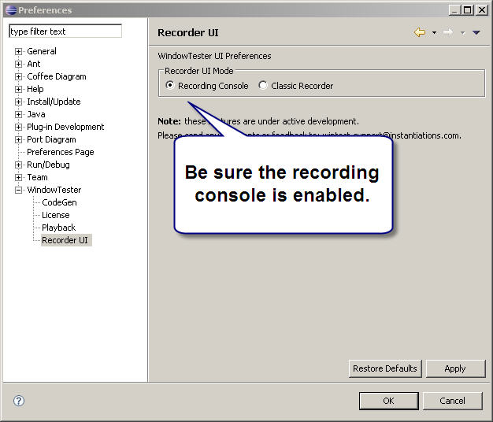

Assertions can be generated at recording time using the assertion inspector tool. The assertion inspector is activated by clicking the inspector tool item on the recording controller.
Once inspecting, hover over controls of interest to see what properties can be asserted.

To assert a property, select it from the property list and click "Assert". To stop inspecting, click "Cancel".

Once an assertion is made it can be viewed in the recorder console.

